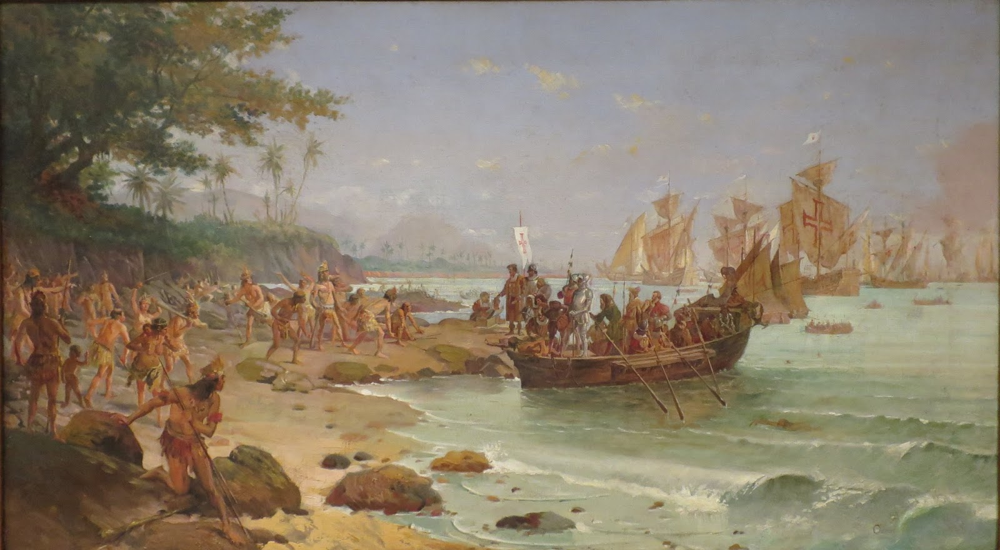
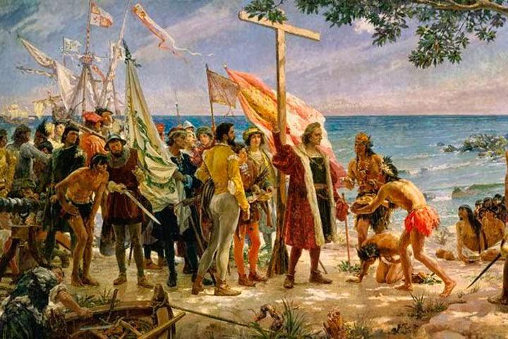
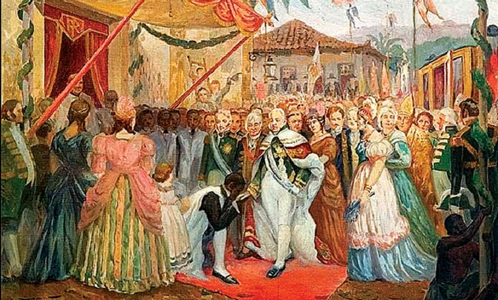

O Descobrimento do Brasil é um marco histórico que remonta a 1500, quando o navegador português Pedro Álvares Cabral e sua frota chegaram às terras que hoje compõem o Brasil. Neste artigo, exploraremos os principais eventos desse período e sua relevância para a história do país.
Em 22 de abril de 1500, a expedição liderada por Cabral avistou terras desconhecidas após uma longa jornada pelo Atlântico. Essa região foi batizada de Terra de Vera Cruz. A chegada dos portugueses marcou o início da colonização europeia no Brasil.
O Descobrimento do Brasil não ocorreu sem controvérsias. Alguns historiadores argumentam que os navegadores fenícios, vikings e até mesmo chineses podem ter chegado ao território brasileiro antes dos portugueses. No entanto, a chegada de Cabral é amplamente aceita como o evento oficial.
Os portugueses encontraram diversas tribos indígenas ao desembarcar no Brasil. Esses povos possuíam culturas ricas e variadas, e a interação entre europeus e indígenas teve impactos significativos na formação da sociedade brasileira.
Após o Descobrimento, Portugal iniciou a exploração das terras brasileiras. A extração de pau-brasil, a introdução da cana-de-açúcar e a escravização dos indígenas foram marcos desse período.
O Descobrimento do Brasil é um evento central na história nacional. Ele moldou a cultura, a língua e a identidade do país. No entanto, também trouxe consigo desafios, como a exploração desenfreada e o impacto negativo sobre os povos nativos.
O Descobrimento do Brasil é um capítulo fundamental na saga da nação brasileira. Ele representa o encontro de culturas, a exploração e os desafios enfrentados ao longo dos séculos. A história do Brasil é intrinsecamente ligada a esse momento marcante, e sua compreensão nos ajuda a entender melhor nossa identidade e trajetória como povo.
